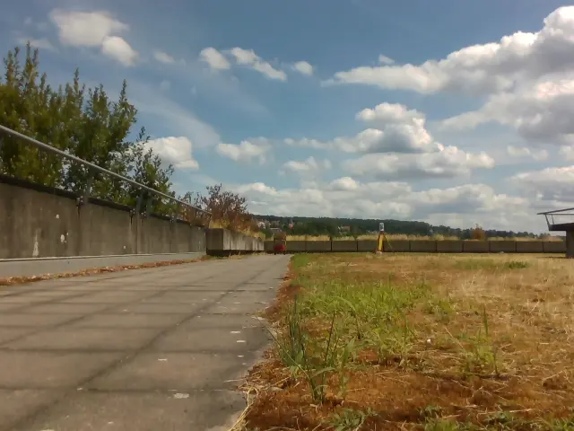
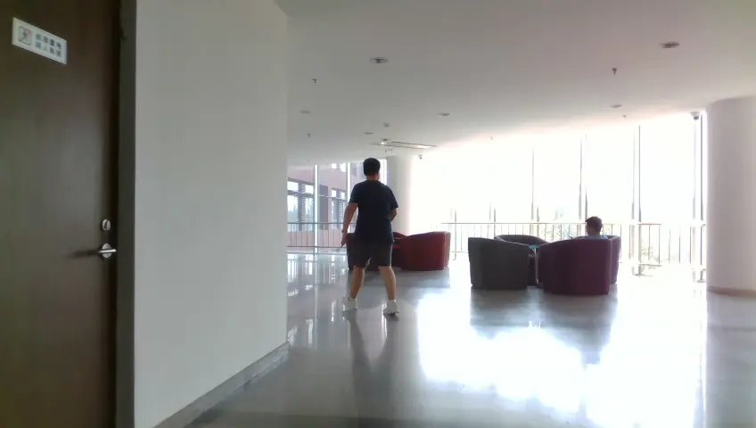
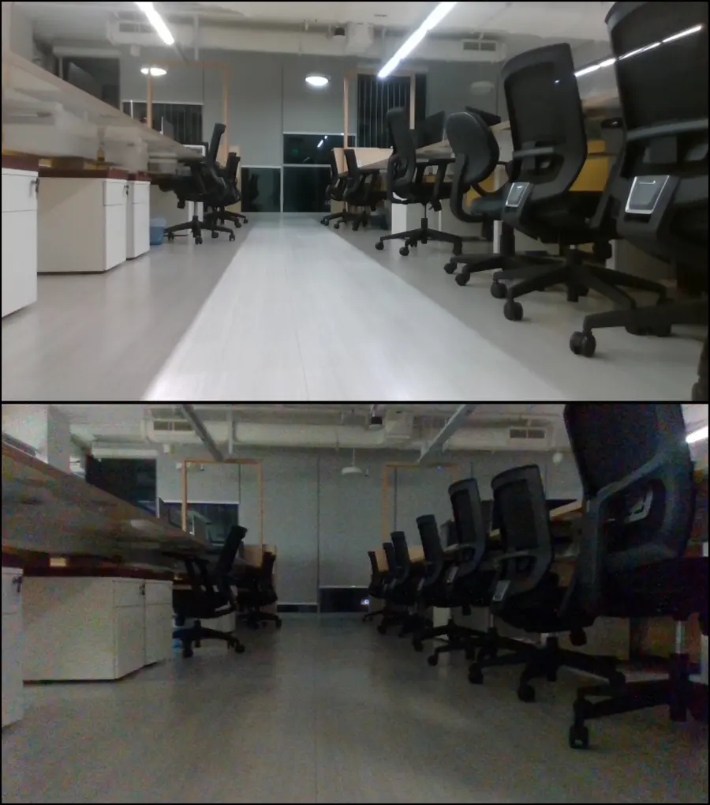
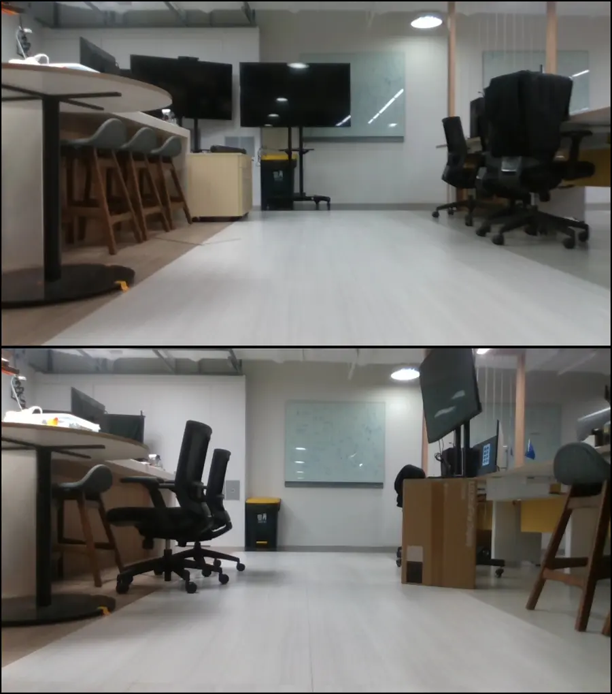
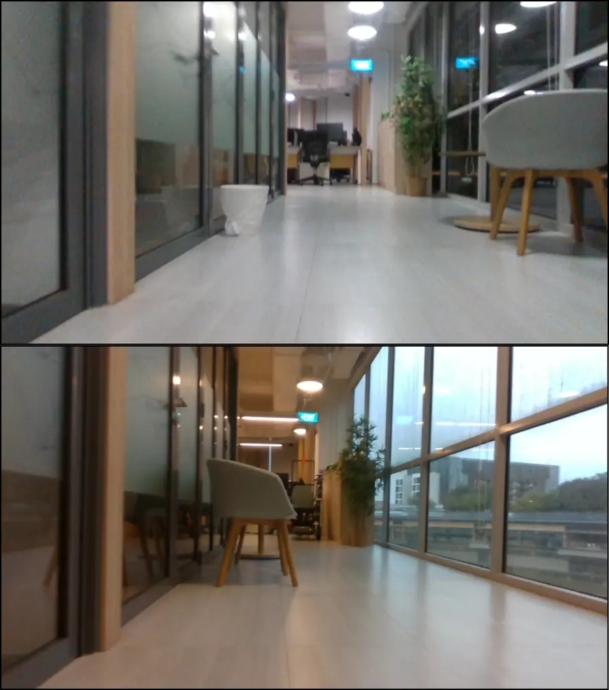

CROSS: Change-Robust Online Topological Memory for Long-Term Relocalization and Semantic Navigation
National University of Singapore
Video
Five minutes on a real robot
Two deployments, an evening map reused in a crowded afternoon and an office map reused after the lights and furniture changed, followed by stress tests with camera occlusion, motion blur and corrupted odometry.
Overview
TL;DR
A robot's memory is only as good as its ability to find itself in it again. CROSS stores a sparse graph of raw RGB-D keyframes and never trusts a visual match on sight: every retrieval is lifted into a continuous SE(3) pose hypothesis, tested against odometry over time, and only persistent branches are allowed to change the map.
- 38.4%Cross-session relocalization success on OpenLORIS + ROVERvs 19.8% for the best baseline (RTAB-Map)
- 76.7%Real-robot object-goal navigation success, 30 trialsvs 43.3% for metric map + semantics (RTAB-Map)
- 0.452Balanced localization accuracy under perceptual aliasing (Topo-Bench)vs 0.301 for the best baseline (RTAB-Map)
- 28 msPer RGB-D frame on one RTX 4000: retrieval, relative pose and filteringfaster than 30 Hz
Numbers on this page are from the paper. The CROSS benchmark uses its own protocol, so its numbers are not directly comparable.
CROSS in the wild. A quadruped maps a ≈170 m route through walkways and a canteen in the evening, then comes back in the afternoon when the area is crowded and lit differently, and navigates to a goal given in language. Hover or tap a label to see where it happens; click the figure to enlarge it.
- Language goal “security post” is found and reached
- Same place: empty while mapping, crowded while relocalizing
- Evening mapping vs afternoon relocalization
- The camera disconnects mid-map and reconnects later
- Navigating among moving pedestrians
- A persistent branch is promoted to a loop closure
- A spurious branch is rejected as the robot moves
- The robot: Unitree Go2 with a RealSense D435i
Abstract
Long-term semantic navigation requires a robot to reuse past observations after appearance and scene change, but semantic memories are only useful if the robot can relocalize into the memory without corrupting it with false visual matches. We propose CROSS, a change-robust topological memory that introduces a pre-commitment localization layer between visual place recognition and map update. Instead of treating a retrieved keyframe as an immediate place association or loop-closure factor, CROSS lifts each RGB-D retrieval into a candidate global SE(3) pose mode using relative pose estimation. A bounded Gaussian-mixture filter then propagates competing continuous trajectory branches with odometry, rejects branches that are physically inconsistent, and promotes only persistent branches to loop closures. This moves ambiguity handling from discrete place IDs or post-hoc graph-factor rejection to continuous pose-space validation before map commitment. Across public long-term relocalization benchmarks and real quadruped object-navigation experiments, CROSS improves reuse of a single sparse RGB-D memory under illumination, seasonal, dynamic-scene, and object-level change.
The idea
When should a robot trust a visual match?
Place recognition proposes where the robot might be. Under changed lighting and repetitive structure, the top match is often a look-alike, and a false loop closure quietly corrupts the memory. Topological filters wait before committing, but over discrete place IDs that throw away the geometry needed to check a match against odometry. Robust pose-graph back-ends keep the geometry, but only judge a match after it has entered the graph. CROSS fills the empty corner.
Single-frame retrieval
Belief over discrete place IDs; Match enters the map first, is judged later
Take the best-scoring keyframe and commit. Fast, but every look-alike becomes a false loop closure.
Topological & sequence filters
Belief over discrete place IDs; Match is judged before it enters the map
Delay the decision over node IDs, routes or image sequences. They wait, but cannot ask whether a match fits the robot's motion.
Robust pose-graph back-ends
Belief over continuous poses; Match enters the map first, is judged later
Switchable constraints, max-mixtures, multi-hypothesis iSAM. Geometry is kept, but candidates are already factors in the graph.
CROSS
Belief over continuous poses; Match is judged before it enters the map
Each retrieval becomes an SE(3) pose branch, propagated with odometry and pruned when inconsistent. Only persistent branches reach the map.
See the difference
A toy 2-D version of the problem, not the real system. A robot wakes up in one of two look-alike corridors of a map built in an earlier session. Retrieval scores the true corridor and its twin about equally, so appearance alone cannot decide. Only the turn at the end, which the twin corridor does not have, separates them.
Commit on retrieval
Trusts the top match every time.
CROSS
Tests matches against odometry first.
Position error of the committed estimate
The commit rule here mirrors the paper's delayed test in simplified form: a branch is promoted once it holds at least 80% of the belief in 6 of its last 8 updates.
Method
Topological in what it stores, continuous in what it tests
The memory is a sparse graph: each node keeps a raw RGB-D keyframe and a Gaussian-mixture pose, and edges record odometry and proximity. Raw frames keep the memory task-agnostic, since detectors or VLMs can read them at query time. The posterior over trajectory and map factorizes into state estimation, which tracks competing pose branches, and map management, which writes only what state estimation has confirmed.
Representation: a Gaussian mixture on SE(3)
The robot pose xt and every keyframe pose ci are finite Gaussian mixtures on SE(3). Each component is a Gaussian in the tangent space se(3) around its own mean μ: the logarithm map takes a pose into that space and the exponential map brings it back. Writing uncertainty as a residual log(μ−1s) keeps it where linearization is valid.
One component is one pose branch. A mixture can therefore hold several competing answers to “where am I?” at once, such as the true place and a look-alike, and the number of components is capped so the cost stays bounded. The steps below grow, re-weight and prune these branches.
Retrieve candidates, but don't believe them yet
Visual place recognition (BoQ) proposes keyframes that look like the current frame. Each proposal is weighted by appearance and by geometry: the retrieval score and the number of PnP inliers it can support. Several proposals may survive, which is the point: data association is treated as a latent variable instead of being decided here.
Lift each match into a pose, not a place
XFeat + LightGlue matches and an E-PnP solve give the relative pose between the current frame and keyframe i. Composing it with the keyframe's own pose mixture turns a retrieval into a global SE(3) pose mode with an uncertainty that shrinks with the inlier count. Summing over candidates gives a global measurement message that can place modes anywhere in the map, which is what lets the filter recover from tracking loss and detect revisits.
Let odometry test the branches
The belief over the current pose is a bounded Gaussian mixture on SE(3), updated by forward message passing: odometry pushes every branch forward, and the global measurement message re-weights them by overlap. Measurement modes are clustered with an SE(3)-aware DBSCAN, then fused into existing branches, born as new ones, or pruned when their weight or overlap vanishes. A look-alike that fits the image but not the motion loses weight step by step.
Commit only what persists
A revisit, whether a loop closure or a kidnapped-robot event, shows up as a branch that becomes consistent with an older part of the map. Its log posterior odds against the currently tracked branch are counted over a sliding window, and it is promoted only when the count passes a threshold. Then a joint pose-graph optimization aligns the two branches and they merge into one. New nodes are created when retrieval similarity drops, linked by odometry and proximity edges, and smoothed by pose-graph optimization.
Results
One map, many conditions
We build a map from one traversal and relocalize from another, recorded at a different time of day or months later. Each test traversal is cut into 200-frame trials: 735 on OpenLORIS (indoor corridor, ≈80 m) and 1,232 on ROVER (outdoor campus, ≈270 m). A trial succeeds if the robot relocalizes within 2 m indoors or 5 m outdoors.
ROVER · Campus
Outdoor, same spot over 14 months

OpenLORIS · Corridor
Indoor, same spot from noon to night

Relocalization success under appearance change
Whiskers: 95% Wilson intervals (per dataset). Higher is better.
On both datasets, with a map from another session: CROSS 38.4% vs 19.8% for the next best (RTAB-Map).
Show as table
| Method | Success | 95% CI |
|---|---|---|
| ORB-SLAM3 | 1.3% | — |
| RTAB-Map | 19.8% | — |
| MASt3R-SLAM | 6.2% | — |
| GM | 6.9% | — |
| SM | 12.8% | — |
| PBU | 6.8% | — |
| ABM | 9.0% | — |
| CROSS (ours) | 38.4% | — |
From relocalization to object-goal navigation



A Unitree Go2 builds a memory in one session, is dropped at a random spot in a later session, and must walk to an object it saw before (a bin, a plant, a coke bottle). Success means ending within 1 m of the object. Ten trials per setting. The baseline is the usual metric map + semantic layer (M+S), built on ORB-SLAM3 or RTAB-Map from the same mapping run.
Object-goal navigation success
n = 10 per setting (30 overall). Whiskers: 95% Wilson intervals.
With ten trials per setting the intervals are wide; the pooled 30 trials separate CROSS (76.7%, [59.1, 88.2]) from both baselines.
Show as table
| Method | LC | OR | LC+OR | All |
|---|---|---|---|---|
| M+S (ORB-SLAM3) | 30% [10.8, 60.3] | 30% [10.8, 60.3] | 20% [5.7, 51.0] | 26.7% [14.2, 44.4] |
| M+S (RTAB-Map) | 40% [16.8, 68.7] | 60% [31.3, 83.2] | 30% [10.8, 60.3] | 43.3% [27.4, 60.8] |
| CROSS | 70% [39.7, 89.2] | 80% [49.0, 94.3] | 80% [49.0, 94.3] | 76.7% [59.1, 88.2] |
Perceptual aliasing (Topo-Bench)
Balanced localization accuracy: the geometric mean of the three regimes, so a method cannot win by excelling at one.
Show as table
| Method | A+P | P.O. | A.O. | BLA |
|---|---|---|---|---|
| RTAB-Map | 0.059 | 0.433 | 1 | 0.301 |
| ORB-SLAM3 | 0.059 | 0.183 | 1 | 0.227 |
| ABM | 0.02 | 0.328 | 1 | 0.201 |
| OpenFABMAP | 0 | 0.112 | 0.732 | 0.0748 |
| RatSLAM | 0.02 | 0.097 | 0.443 | 0.103 |
| GM | 0.078 | 0.302 | 0.959 | 0.288 |
| SM | 0.118 | 0.187 | 0.959 | 0.281 |
| PBU | 0.078 | 0.302 | 0.959 | 0.288 |
| CROSS (ours) | 0.275 | 0.336 | 0.99 | 0.452 |
Why continuous poses matter
PBU uses the same graph, the same BoQ retrieval and the same protocol as CROSS, but filters over discrete node IDs. Cross-session relocalization success:
Many look-alike matches cannot be rejected by discrete temporal consistency alone. Keeping the branches in SE(3) lets odometry test whether a retrieved place is physically possible before it is promoted.
Show as table
| Dataset | PBU (discrete node IDs) | CROSS (continuous SE(3)) |
|---|---|---|
| OpenLORIS | 8.0% | 35.3% |
| ROVER | 6.3% | 39.7% |
| Both | 6.8% | 38.4% |
Robustness
When the camera lies, the branches wait
When images are unusable, branches keep moving on odometry and their uncertainty grows. When good frames return, the global measurement message finds the right keyframe again. Pick a case and watch it play.
Camera occlusion
The camera is covered twice. With no usable retrieval the motion message keeps moving on odometry and its uncertainty grows, while nothing is written to the map. When a clear frame returns, the measurement message overlaps the motion message again and uncertainty collapses.
Left: belief on the map. Right: camera. Yellow: estimated trajectory. Blue: motion message. Green: measurement message. Ellipse axes show uncertainty.
Real time on one GPU
Average time per RGB-D frame on an RTX 4000 Ada, against a 30 Hz frame budget.
Show as table
| Part | Time per frame |
|---|---|
| Relative pose (PnP) | 16 ms |
| Retrieval, filtering, map | 12 ms |
| Total | 28 ms |
| Budget at 30 Hz | 33.3 ms |
Relative-pose module
Time per frame pair, same GPU, same linear scale.
Show as table
| Relative pose | Time per frame pair |
|---|---|
| XFeat + PnP | 16 ms |
| VGGT | 490 ms |
Limitations
What CROSS does not solve yet
Relative pose is the bottleneck. Keypoint matching and PnP can fail under extreme appearance shift, low overlap, motion blur or noisy depth. The filter itself can take a learned relative-pose estimator once one is accurate, metric and fast enough.
Absolute success is still limited. Even for CROSS, cross-session success is around 40%, and it drops for day-to-night and January-to-September gaps. A moving robot gets repeated chances to relocalize, so higher rates mean faster recovery rather than all-or-nothing.
Semantic scope. Navigation targets come from stored observations and object queries; full open-vocabulary spatial reasoning is not evaluated here.
Citation
BibTeX
@inproceedings{wang2026cross,
title = {Change-Robust Online Topological Memory for Long-Term
Relocalization and Semantic Navigation},
author = {Wang, Jiaming and Chen, Jizhuo and Liu, Diwen and
Ghotavadekar, Atharva and Da, Jiaxuan and K{\"a}stner, Linh
and Soh, Harold},
booktitle = {Advances in Neural Information Processing Systems (NeurIPS)},
year = {2026},
eprint = {2605.02227},
archivePrefix = {arXiv}
}CROSS · Change-Robust Online Spatial memory System
Benchmarks: OpenLORIS-Scene (Shi et al., ICRA 2020) · ROVER (Schmidt et al., T-RO 2025) · Topo-Bench